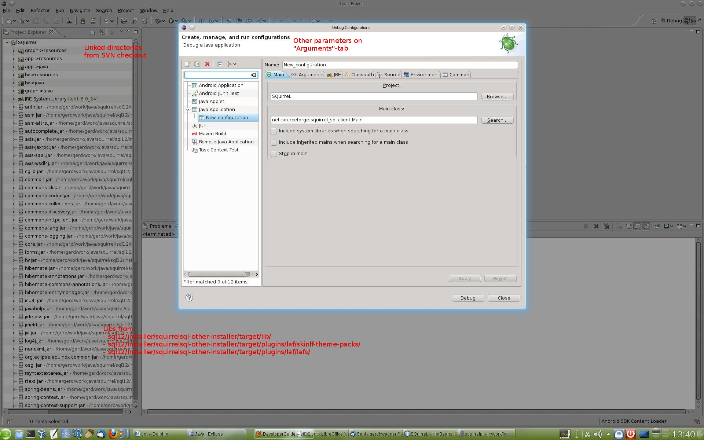

Develop and debug SQuirreL and SQuirreL-Plugins
Scope
This article explains how to set up Java-IDEs to develop and debug SQuirreL and SQuirreL-Plugins. The set up presented here is different from the standard Maven based set up explained at http://sourceforge.net/apps/trac/squirrel-sql/wiki/DeveloperGuide. While the Maven based set up provides all the necessary steps to create full builds and installers for SQuirreL this set up is focused on a programmer's needs who wants to quickly compile, test and debug code changes.
Content
Basic idea
First we
describe the basic idea of the set up which should be
IDE-independent. That means with any Java-IDE one should be able to
create a project according to the basic idea.
Example project set ups for Eclipse, Netbeans and IntelliJ-Idea
Basic idea
Install SQuirreL in some directory. Alternatively after you have done the Maven builds you might use sql12/installer/squirrelsql-other-installer/target/ as your quasi installation directory.
Create a project in your IDE and
include the necessary libraries from the installation directory.
That is usually the jars from the lib dir, squirrel-sql.jar and the
jars from the plugins/ directory.
Some Plugins bring their own
libraries with them. You might need to include those libs in your
project too.
At this point you should be able to start SQuirrel from within the IDE using
net.sourceforge.squirrel_sql.client.Main as main class.
splash:<install-dir>/icons/splash.jpg as VM parameter. (Note: You wont find splash.jpg in the quasi installation dir mentioned above.)
-home <installation-directory> as program parameter.
Include the sources of your SVN
checkout you want to work with in your project. For example
sql12/fw/src/main/java/
sql12/fw/src/main/resource/
sql12/app/src/main/java/
sql12/app/src/main/resource/
sql12/plugins/graph/src/main/java/
sql12/plugins/graph/src/main/resource/
Example project set ups Eclipse, Netbeans and IntelliJ-Idea
Eclipse

Netbeans
IntelliJ Idea